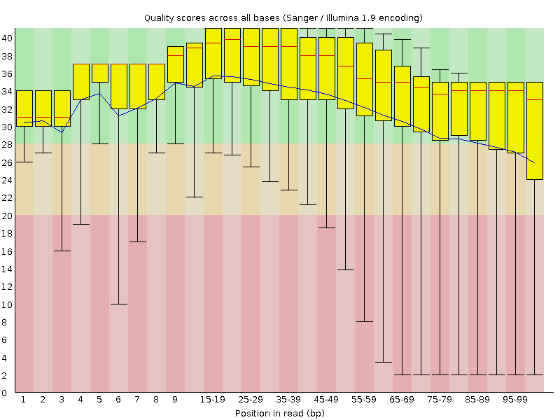
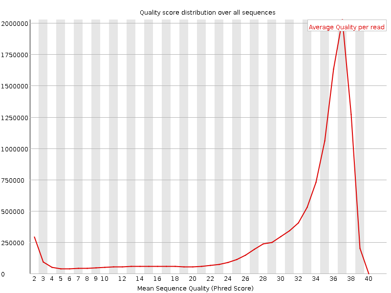
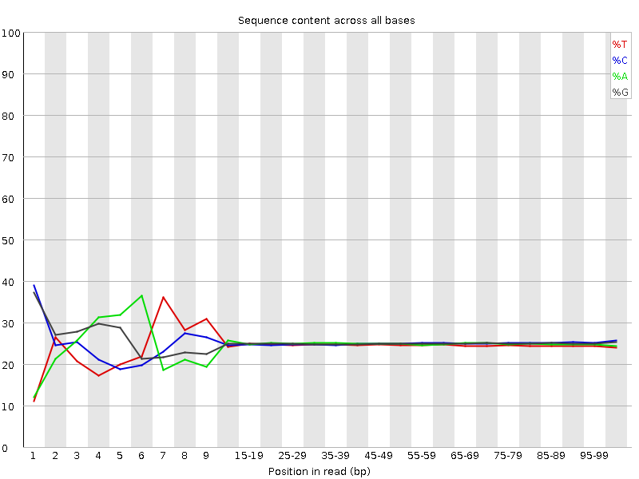
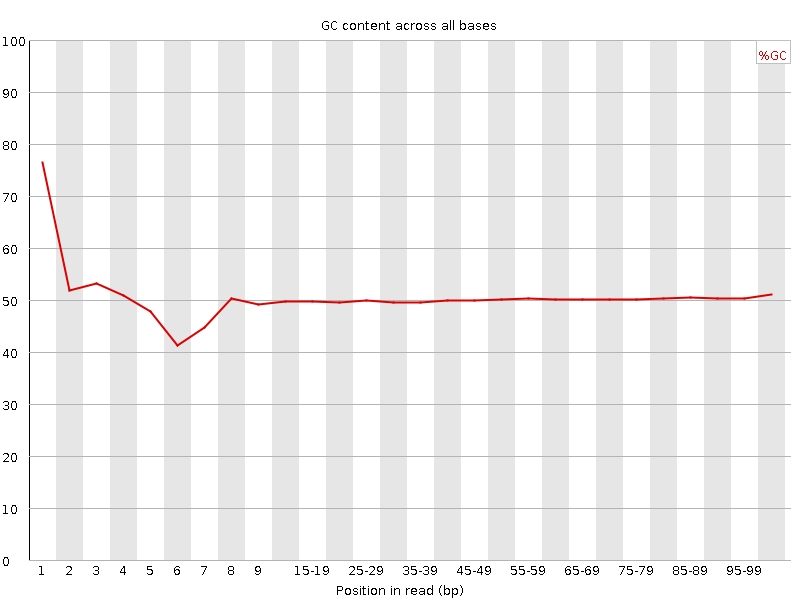
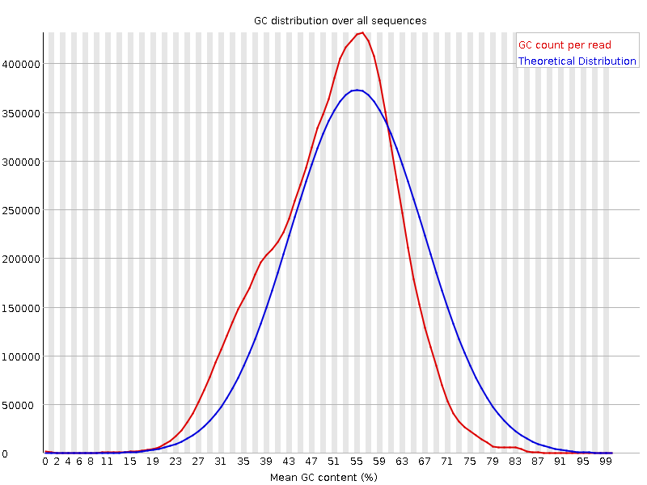
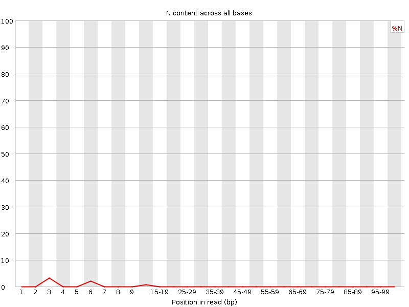
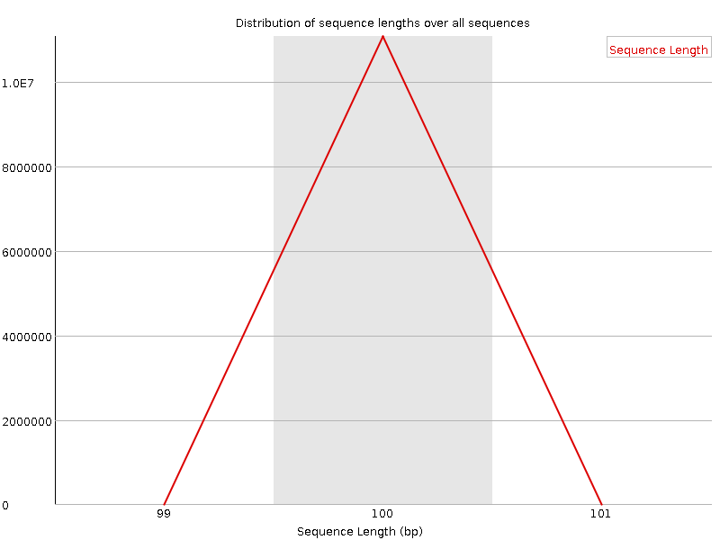
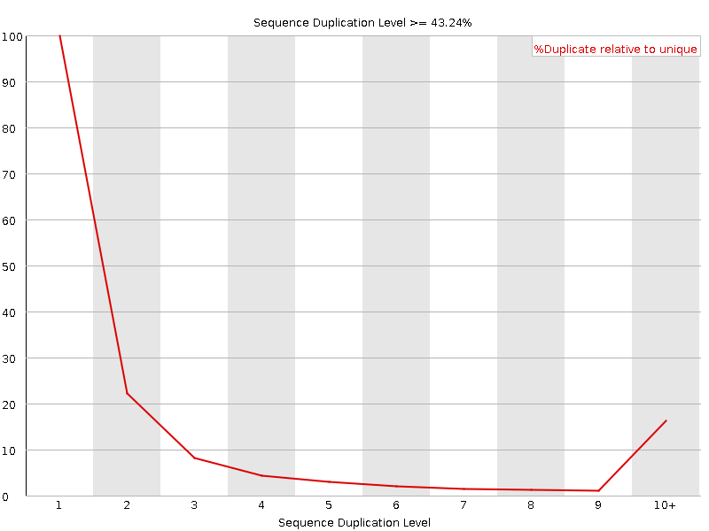
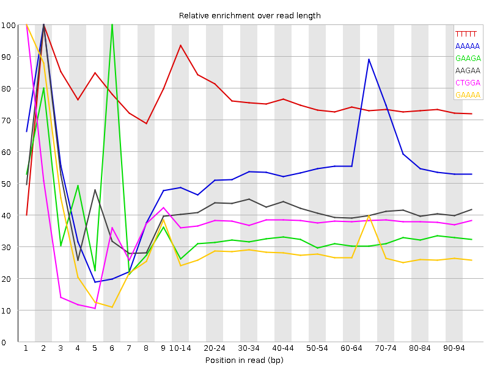

![[OK]](Icons/tick.png) Basic Statistics
Basic Statistics
| Measure | Value |
|---|---|
| Filename | F_heteroclitus_MDPL_BW_2_R1.fastq.gz |
| File type | Conventional base calls |
| Encoding | Sanger / Illumina 1.9 |
| Total Sequences | 11072740 |
| Filtered Sequences | 0 |
| Sequence length | 100 |
| %GC | 50 |
Per base sequence quality

Per sequence quality scores

![[FAIL]](Icons/error.png) Per base sequence content
Per base sequence content

Per base GC content

![[WARN]](Icons/warning.png) Per sequence GC content
Per sequence GC content

Per base N content

Sequence Length Distribution

Sequence Duplication Levels

Overrepresented sequences
| Sequence | Count | Percentage | Possible Source |
|---|---|---|---|
| GATCGGAAGAGCACACGTCTGAACTCCAGTCACGAGATTCCATCTCGTAT | 42303 | 0.3820463588958108 | TruSeq Adapter, Index 7 (97% over 38bp) |
Kmer Content

| Sequence | Count | Obs/Exp Overall | Obs/Exp Max | Max Obs/Exp Position |
|---|---|---|---|---|
| TTTTT | 5733275 | 5.9907227 | 7.8788037 | 2 |
| AAAAA | 6012245 | 5.802339 | 10.489095 | 2 |
| GAAGA | 2365380 | 2.2394238 | 6.8102274 | 6 |
| AAGAA | 2284965 | 2.18414 | 5.2309012 | 2 |
| CTGGA | 2237855 | 2.144672 | 5.6852393 | 1 |
| GAAAA | 2135570 | 2.041337 | 7.0822096 | 1 |
| AGAAA | 2088515 | 1.9963584 | 5.012404 | 2 |
| GGAGA | 2093185 | 1.9628063 | 5.019372 | 2 |
| AAAAT | 1940290 | 1.9025457 | 5.903179 | 3 |
| AAAAC | 1966425 | 1.8907555 | 5.1690574 | 3 |
| GTTTT | 1836320 | 1.8704983 | 6.2334847 | 1 |
| AAAAG | 1956425 | 1.8700969 | 5.2491646 | 3 |
| GGAAG | 1808770 | 1.6961068 | 6.227619 | 5 |
| GGAAA | 1624215 | 1.5377256 | 6.7006087 | 1 |
| AAGAG | 1583755 | 1.4994203 | 6.8807435 | 7 |
| AGAGC | 1551285 | 1.46325 | 7.482592 | 8 |
| GAGCA | 1536770 | 1.4495585 | 7.825914 | 9 |
| GCCAG | 1526840 | 1.4348685 | 5.0407434 | 1 |
| GGGAG | 1509740 | 1.4021888 | 5.0363603 | 1 |
| TCGGA | 714565 | 0.6848109 | 5.934994 | 3 |
| GATCG | 651705 | 0.62456834 | 6.049508 | 1 |
| CGGAA | 629685 | 0.59395057 | 5.66514 | 4 |
| ATCGG | 591375 | 0.5667505 | 5.8117537 | 2 |